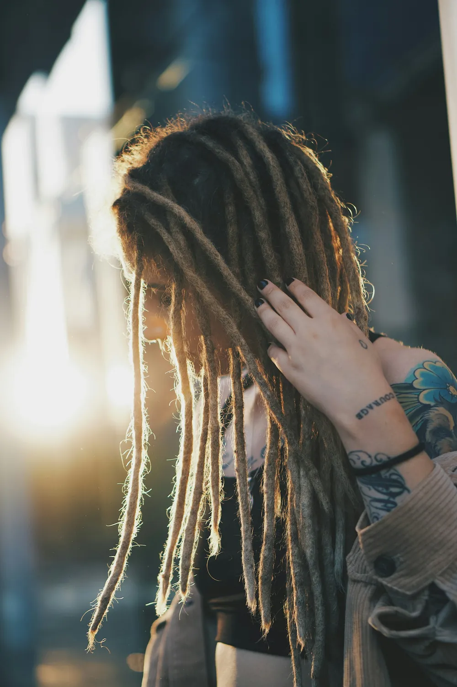
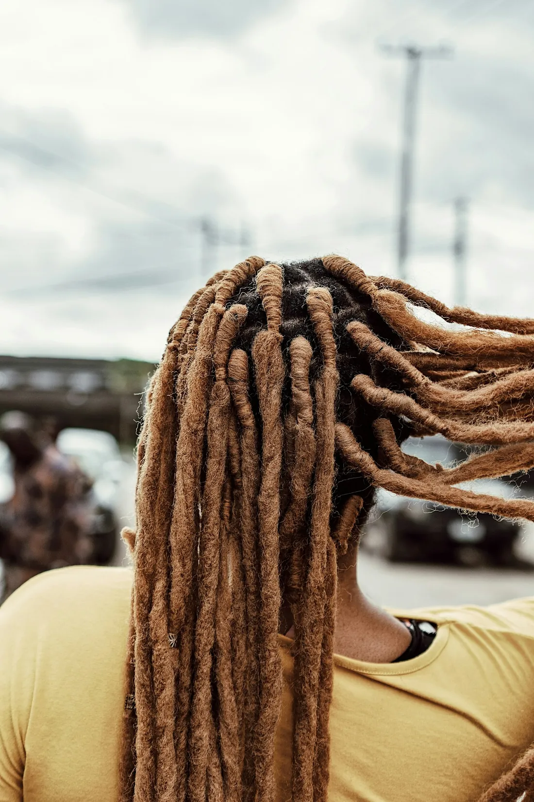
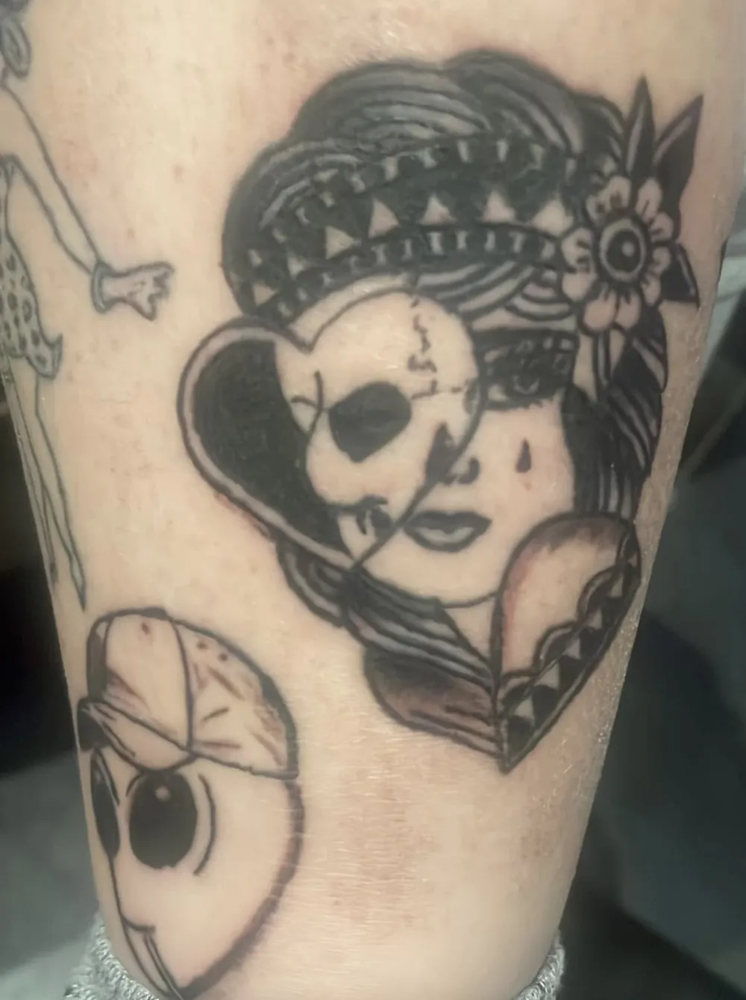
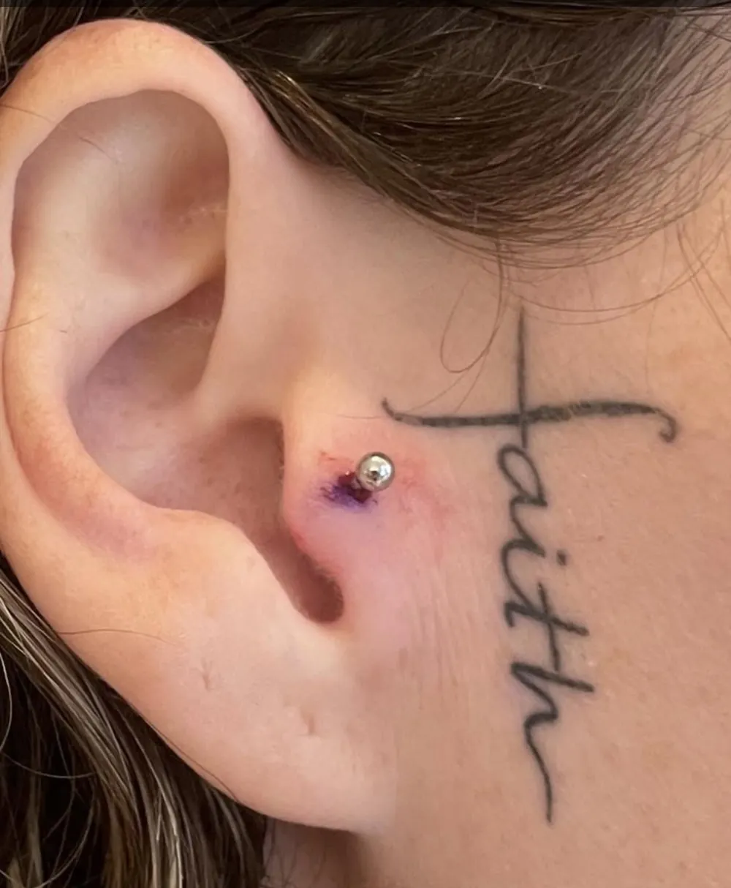
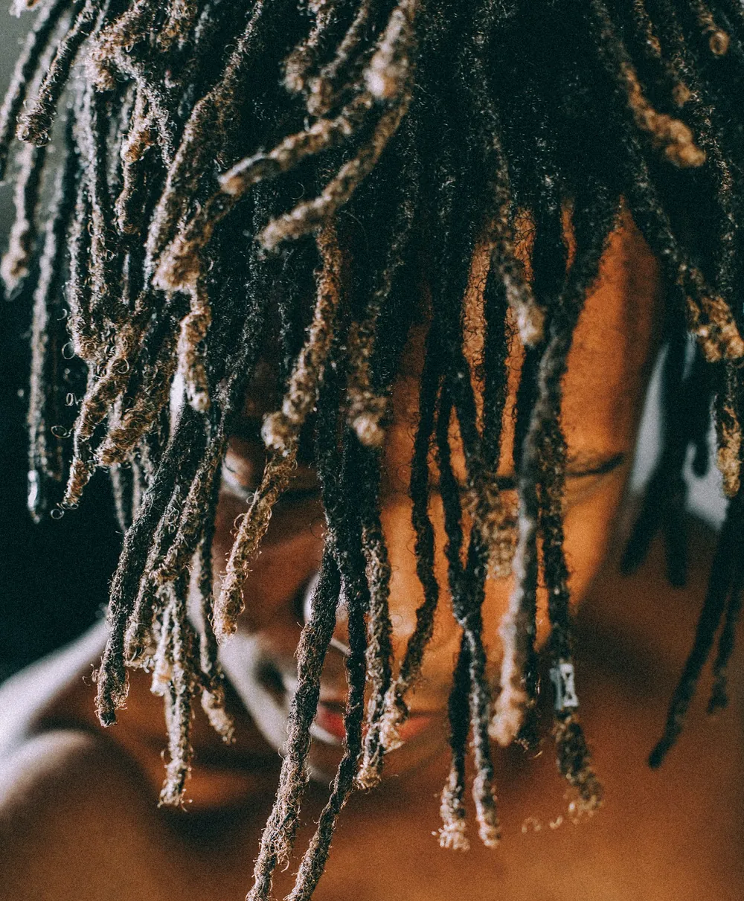
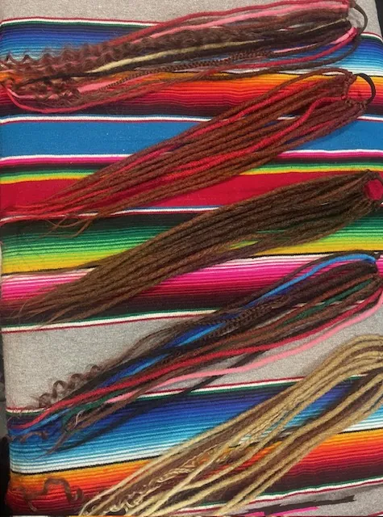
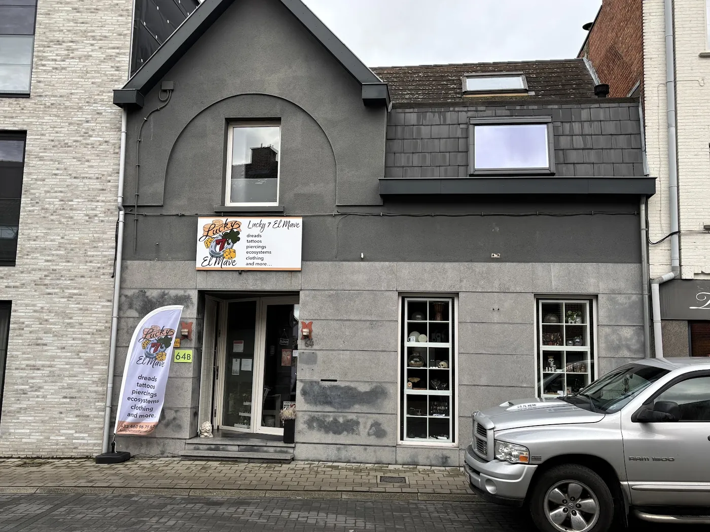

01Dreadlocks
Van echt of synthetisch haar, gemaakt en geplaatst volgens verschillende technieken. Ook bijwerken of een paar bijzetten kan.
Bij Lucky 7 maken we je dreadlocks, tekenen en zetten we je tattoo en plaatsen we je piercing. Met de tijd en de uitleg die je nodig hebt.

dreads
tattoos
piercingsDreadlocks ✦ Tattoos ✦ Piercings ✦ Tattoos bijwerken ✦ Kleding ✦ Ecosystems
Van een volle bos dreads tot een kleine piercing. Kom binnen met je idee, dan bekijken we samen wat kan.

01Van echt of synthetisch haar, gemaakt en geplaatst volgens verschillende technieken. Ook bijwerken of een paar bijzetten kan.
We ontwerpen je tattoo, zetten hem, en werken ook bestaande tattoos bij.
Professioneel geplaatst, met aandacht voor veiligheid en hygiëne. En met alle uitleg die je wil.
Nog een beetje meer Lucky 7: unieke kledingstukken en zelfgemaakte ecosystems. Vraag er gerust naar in de zaak.


Echt haar of synthetisch, natuurlijk of in alle kleuren van de regenboog. We bekijken samen welke techniek en welke look het best bij je haar en je leven past.
★★★★★“Heel vriendelijk ontvangen en zo goed geïnformeerd. Ik kwam zonder afspraak en werd direct verder geholpen. … Dit was een van de leukste verjaardagsgeschenken die ik mezelf kon geven 😄”
Steffike1
★★★★★“Super toffe mensen eerste keer gekomen we voelde ons zo thuis super lieve mensen en de resultaten super mooi werk echt waar echt een aanrader 💕”
Beatrix sonja Lazar
★★★★★“Perfect!!! Super lieve en helpvolle mensen! Je ziet echt dat ze van hun zaak en job enorm houden! Heb een Tongue piercing laten zetten en was heel snel en pijnloos gedaan!”
Kalego Naberius

Vragen over dreads, een tattoo-idee of een piercing? Bel even, stuur een berichtje of spring binnen tijdens de openingsuren.
Ik maakte deze demo voor jullie om te tonen wat er kan. Na een kort gesprek maak ik er iets veel persoonlijkers van, helemaal naar jullie wens.
Vrijblijvend. Ik kom langs of we bellen.
Op maat, op jullie eigen domein.
Geen voorschot. Jullie betalen pas als alles klaar is.
Hosting, domeinnaam en kleine wijzigingen, zoals nieuwe openingsuren.
Omdat een voorbeeld meer zegt dan een mail. Zo zien jullie meteen wat er kan, en het kost jullie niets.
Nee. Het gesprek is vrijblijvend. Vinden jullie het niks, dan is het daarmee gedaan.
Na ons gesprek staat jullie site binnen 10 tot 14 dagen online.
Zeker. Jullie domeinnaam kan gewoon blijven, de nieuwe site komt in de plaats van de oude.
Nee, dat doe ik op basis van ons gesprek. Eigen foto's zijn mooi meegenomen, maar niet nodig om te starten.